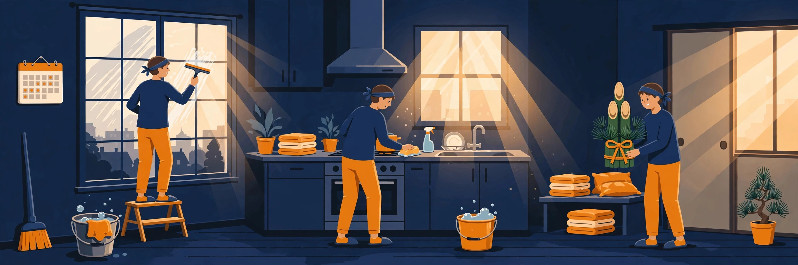
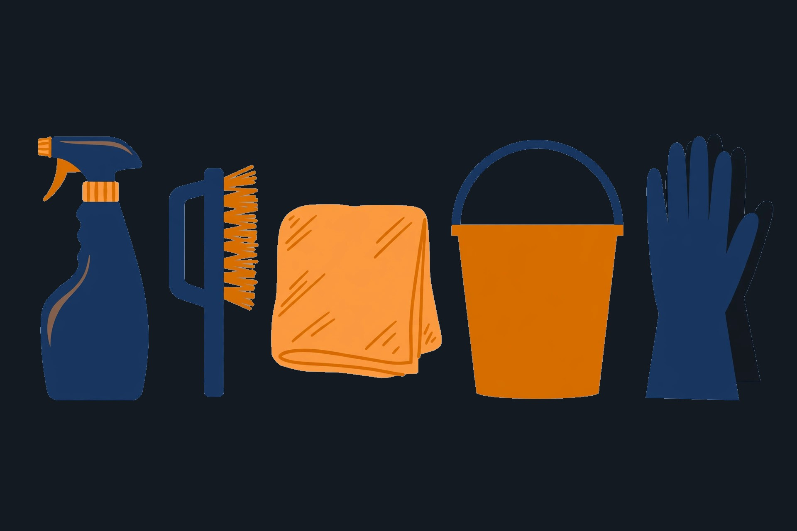
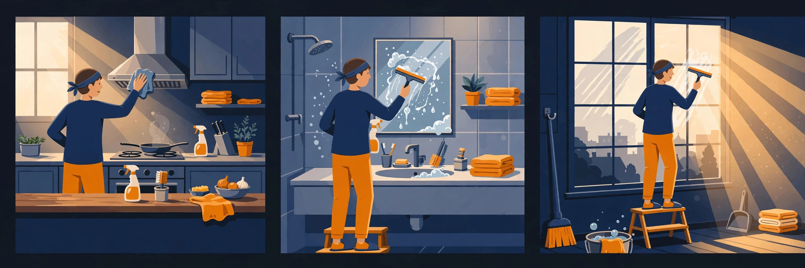

年末大掃除のカイカタ
「1日で全部」が失敗のもと。場所ごとに週末へ割り振れば、1回30分〜1時間で終わる
1. 大掃除の進め方（図解）
油汚れも水あかも、置くほど落としにくくなります。軽いうちに手をつけることが、小分けにする第一の理由です。逆に言えば、年末にまとめてやるほど、1か所あたりの手間が増えます。
キッチンの油、水回りの水あかとカビ、窓のホコリと手あかでは、落とし方が別です。場所を週末ごとに分ければ、その週の道具と洗剤だけ出せば済み、準備と片づけも小さくなります。
年末年始はゴミ収集が休みに入る自治体が多く、粗大ゴミの申し込みも早々に埋まります。掃除の締切は「きれいにしたい日」ではなく、最終の収集日から逆算して決めます。
週末に本体を終えておけば、年末に残るのは拭き上げと不用品の処分だけです。大掃除で年末の半日がつぶれる事態は、この形がいちばん避けられます。
2. 小分けカレンダー

| 週 | 場所 | やること |
|---|---|---|
| 11月最終週 | キッチン | 換気扇とコンロ周り。油汚れは温かいうちに手をつけると落ちやすい |
| 12月1週目 | 窓・サッシ | 結露が本格化する前に。網戸も一緒に洗う |
| 12月2週目 | 水回り | 風呂のカビと水あか、洗面所、トイレ |
| 12月3週目 | 床・玄関 | フローリングの拭き上げと玄関のたたき |
| 年末 | 仕上げ | ゴミ出しの最終日に合わせて、不用品の処分だけ |
※ 週の割り振りは目安です。ゴミ収集の最終日など自治体の日程に合わせて、全体を前倒ししてください。

道具と洗剤は、始める週の前にまとめて届くよう先に注文しておきます。「やる気はあるのに道具がない」が、小分け作戦のいちばんの敵です。
3. 選んだもの（4品）
中性のマルチクリーナー。キッチンの油汚れ、水あか、石けんカスから、風呂・トイレ・窓・床まで水拭きできる場所に使えます。素手でも使える処方で、場所ごとに洗剤を買い分ける手間がなくなります。詰め替え2個付きで、大掃除シーズンを1セットで回せます。
約100℃のスチームで汚れを浮かせるハンディタイプ。電源を入れて約30秒で使え、給水しながら続けられます。フロアノズルを付ければスチームモップにもなる2WAYで、洗剤を使わずにキッチン・風呂・床を掃除できます（★4.4）。
フロアモップの売れ筋1位の定番本体（★4.4・レビュー約4,900件、直近1か月で1万点以上購入）。ドライシートでホコリと髪の毛を集めてからウエットで拭く2段構えが床掃除の基本形で、大掃除の最後の仕上げが一気に終わります。本体だけ先に買って、シートは枚数を見て足すのが無駄のない順番です。
本体と組み合わせる仕上げ用シート。ストロングタイプはベタつき汚れまで拭き取る設計で、キッチンの床や玄関の皮脂汚れに向きます（★4.4）。48枚の大容量で、大掃除シーズンに途中で切らす心配がありません。
4. 道具・洗剤の選び方
道具と洗剤は、増やすほど置き場所と管理が増えます。このページの軸は「家中1本で済む洗剤＋浮かせる切り札＋仕上げのワイパー」の3点です。具体的な商品は上記3の「選んだもの」に置いてあります。
水拭きできる場所の大半は、中性洗剤1本でカバーできます。場所ごとに専用洗剤を買い分ける前に、まず1本で回る形を作るのが先です。
こびりついた汚れは、洗剤を増やすより先に「浮かせる」手段があると楽になります。スチームのように熱で浮かせる道具が、その役目です。
床はドライでホコリを集めてからウエットで拭く2段構え。本体はずっと使うもの、シートは消耗品として分けて考えると無駄がありません。
専用洗剤や道具は、その場所を掃除する週に合わせて足します。先に全部そろえると、使わない道具の置き場所だけが増えます。
5. 場所別の進め方

油汚れは冷えると固まります。温かいお湯で拭くか、スチームで浮かせてから拭き取ると、手数が減ります。換気扇の部品は外して浸け置きすると、こすり続ける回数が減ります。
注意点は、油を含んだ水の流し先です。拭き取った油はできるだけ紙や布で回収してから洗うと、排水口の汚れが増えません。
水あかと石けんカスは、こすり続ける前に洗剤を置いて時間を味方にすると落ち方が変わります。カビは塩素系の出番ですが、その前に汚れを落としておくと効きが安定します。
注意点は安全です。塩素系を使うときは換気が必須で、酸性の洗剤とは絶対に混ぜないこと。ゴム手袋もこの週に合わせて用意します。
窓ガラスは洗剤を多用すると拭き跡が残ります。水拭きで汚れを落として、乾拭きで仕上げる2回が基本形です。サッシの溝は、先にホコリをかき出してから拭くと二度手間になりません。
注意点は時期です。結露が本格化すると窓まわりが乾きにくくなるので、12月の早い週に寄せます。網戸も同じ週に洗うと、脚立の出し入れが1回で済みます。
床はドライシートでホコリと髪の毛を集めてから、ウエットで拭き上げる順番が基本です。玄関のたたきは、砂とホコリを掃き出してから水拭きすると仕上がりが変わります。
注意点は、この週が「不用品の洗い出し」と重なることです。床を空けるついでに粗大ゴミ候補をまとめると、上記7の締切チェックが楽になります。
6. 年内にやる・やらないの線引き
| 場所・項目 | 線引き | 理由 |
|---|---|---|
| 換気扇・コンロ周り | 年内にやる | 油汚れは時間が経つほど固くなります。年越しの料理の前にも片づけたい場所です。 |
| 粗大ゴミの申し込み | 年内にやる（早め） | 掃除そのものより先に締切が来ます。申し込みだけは週末を待たずに済ませます。 |
| カーテンの洗濯 | 年内にやる | 洗って干す場所と天気が要ります。窓掃除の週と合わせると流れが作れます。 |
| 冷蔵庫の中身整理 | 年内にやる | 年末年始の食材が入る前に空けます。庫内の拭き掃除は中身が少ない日が狙い目です。 |
| エアコンの内部洗浄 | 年明け・業者 | 暖房で使う時期に外すと、使えない期間が出ます。本格的な内部洗浄は年明けに分ける判断で構いません。暖房器具そのものの本番前の点検は、冬支度チェックリストにまとめています。 |
| ベランダ・外壁の洗浄 | 年明けでも可 | 室内の仕上がりに影響しません。水を使う作業は、寒い時期より年明けのほうが進めやすい面もあります。 |
| 押し入れ・収納の全出し | 年内はやらない | 仕上げの直前に散らかると、年末そのものが潰れます。年内は「見える範囲と床」までにとどめます。 |
※ 線引きは考え方の目安です。来客の予定や家族の都合に合わせて入れ替えてください。
7. 年末の締切チェックリスト
年末年始は収集が休みになる自治体が多く、最終日は資源ゴミと可燃ゴミで別々です。自治体の案内で最終日を確認して、カレンダーに先に入れます。
申し込みが混み合い、年内の回収枠が埋まります。上記5の床掃除の週に洗い出して、その場で申し込むのが安全です。
配送が混む時期です。「その週に使う分」が週の頭に届いている状態を作ると、小分けの流れが止まりません。
汚れが固い場所（キッチン）→水回り→窓→床、の順で固定します。先に終わった場所は、年末まで「触らない・増やさない」を守るだけです。
年明けに回す場所をあらかじめ決めておくと、年末に焦って塊を大きくし直す失敗が減ります。回す判断自体は負けではありません。
※ ゴミ以外の年末の締切（ギフトの配送・食品の予約）は、年末年始の締切チェックリストも合わせて確認してください。
8. よくある質問
Q. 道具はブラックフライデーで買うべきですか？
Q. 小分けにしても続くか不安です。
Q. 不用品の処分はどうしますか？
Q. どこから始めるのが正解ですか？
Q. 高圧洗浄機は必要ですか？
関連する特集
Amazonのセールは、仕組みと順番を知らないと損をする。その「歩き方」を特集で案内しています。日々の値動きは価格の流れを確認してから、本当に安いものだけをXで速報しています。
Xで速報を受け取る（@A_KAIKATA）Amazonのアソシエイトとして、カイカタは適格販売により収入を得ています。
このサイトについて｜プライバシーポリシー